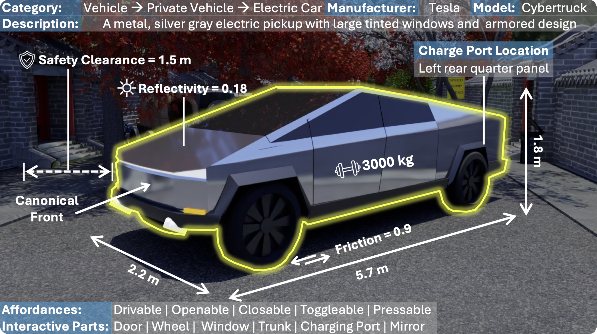

Urban embodied AI agents, ranging from delivery robots to quadrupeds, are increasingly populating our cities, navigating chaotic streets to provide last-mile connectivity. Training such agents requires diverse, high-fidelity urban environments to scale, yet existing human-crafted or procedurally generated simulation scenes either lack scalability or fail to capture real-world complexity. We introduce UrbanVerse, a data-driven real-to-sim system that converts crowd-sourced city-tour videos into physics-aware, interactive simulation scenes. UrbanVerse consists of: (i) UrbanVerse-100K, a repository of 100k+ annotated urban 3D assets with semantic and physical attributes, and (ii) UrbanVerse-Gen, an automatic pipeline that extracts scene layouts from video and instantiates metric-scale 3D simulations using retrieved assets. Running in IsaacSim, UrbanVerse offers 160 high-quality constructed scenes from 24 countries, along with a curated benchmark of 10 artist-designed test scenes. Experiments show that UrbanVerse scenes preserve real-world semantics and layouts, achieving human-evaluated realism comparable to manually crafted scenes. In urban navigation, policies trained in UrbanVerse exhibit scaling power laws and strong generalization, improving success by +6.3% in simulation and +30.1% in zero-shot sim-to-real transfer comparing to prior methods, accomplishing a 300 m real-world mission with only two interventions.

Interactive Features: Click on any segment to drill down into subcategories. Use the center to navigate back up the hierarchy. Better View in Full Screen
Scene 01
Scene 02
Scene 03
Scene 04
Scene 05
Scene 06
Scene 07
Scene 08
Scene 09
Scene 10